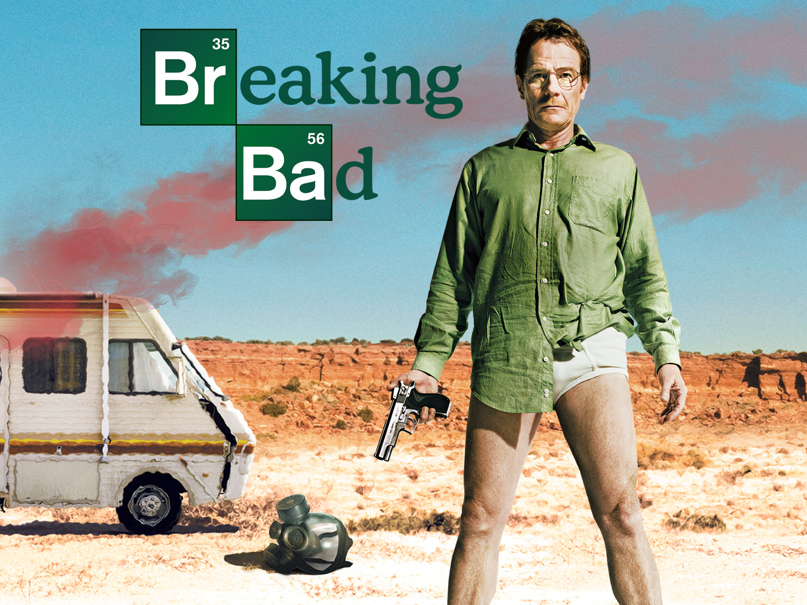

Uma das coisas que mais gosto de fazer é treinar na academia. Faço um treino PPL (Push, Pull, Legs), 3 vezes por semana, e estava nessa rotina há 1 ano e meio.
Para mim, cada treino é um momento de foco e disciplina, onde consigo me superar a cada exercício. Além de cuidar da saúde e do corpo, é também uma forma de manter a mente ativa e liberar energia acumulada. O treino me ajuda a evoluir não só fisicamente, mas também a me sentir mais confiante e determinado em outros aspectos da vida.
Jogar jogos
Meu jogo favorito é o Roblox, que eu jogo desde 2020. O que mais gosto nele é a liberdade de poder explorar diferentes mundos criados por jogadores do mundo inteiro. Sempre tem algo novo para descobrir, desde jogos de aventura até simuladores bem divertidos.
Outra coisa que acho incrível no Roblox é a criatividade da comunidade. Como qualquer pessoa pode criar seus próprios jogos, sempre surgem experiências únicas e diferentes. Isso faz com que o jogo nunca enjoe e sempre tenha alguma novidade para curtir.
Sair com os amigos
Meus amigos são realmente especiais. Sempre que estou com eles, não faltam boas gargalhadas, conversas que marcam e até conselhos que guardo comigo. Mesmo eu não sendo a pessoa mais social do mundo, eles conseguem me deixar à vontade e transformar qualquer encontro em algo divertido e leve.
Sair com eles, mesmo que não seja o que eu mais faço no dia a dia, é sempre uma experiência que me lembra como a vida pode ser boa. Entre risadas e momentos simples, percebo que existem motivos de sobra para valorizar essas amizades e que, no fim das contas, são elas que tornam a jornada mais leve.
Minha série preferida
Breakin Bad
Minha série preferida é Breaking Bad. Ela conta a história de Walter White, um professor de química que, depois de descobrir que tem câncer, decide começar a produzir metanfetamina para garantir o futuro da família. Ao longo da série, a vida dele muda completamente, e ele passa de um homem comum para alguém cada vez mais envolvido no mundo do crime.

O que mais gosto em Breaking Bad é como a série mostra a transformação dos personagens, sempre cheia de tensão e reviravoltas. Além disso, a fotografia, a trilha sonora e as atuações fazem dela uma das séries mais marcantes de todos os tempos.
Minha música preferida
Dark red
Minha música preferida se chama Dark Red, escuto ela desde os meus doze anos e até hoje nunca enjoei. Essa canção tem um clima meio melancólico e romântico ao mesmo tempo, com uma batida suave e envolvente. A letra fala sobre insegurança dentro de um relacionamento, aquele medo de perder alguém que a gente gosta muito. O jeito que o Steve Lacy canta transmite bastante emoção, e é por isso que essa música me marcou tanto.